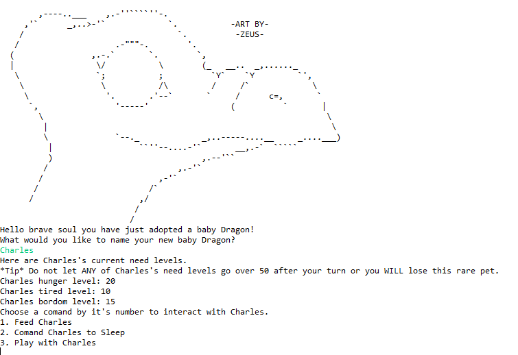
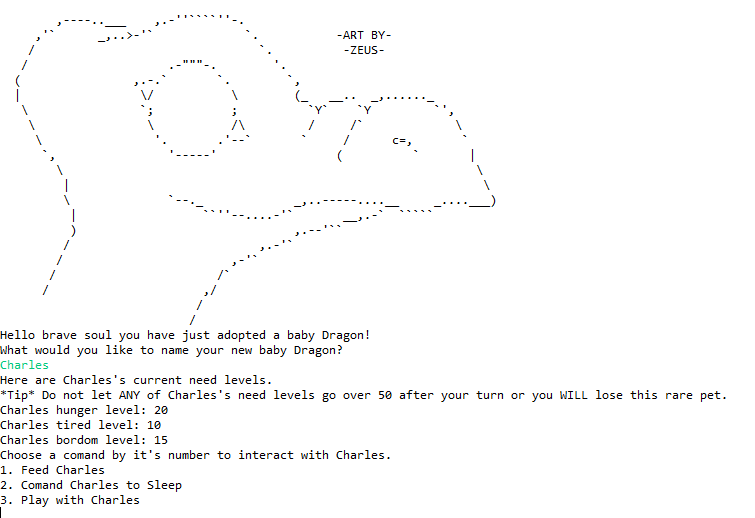
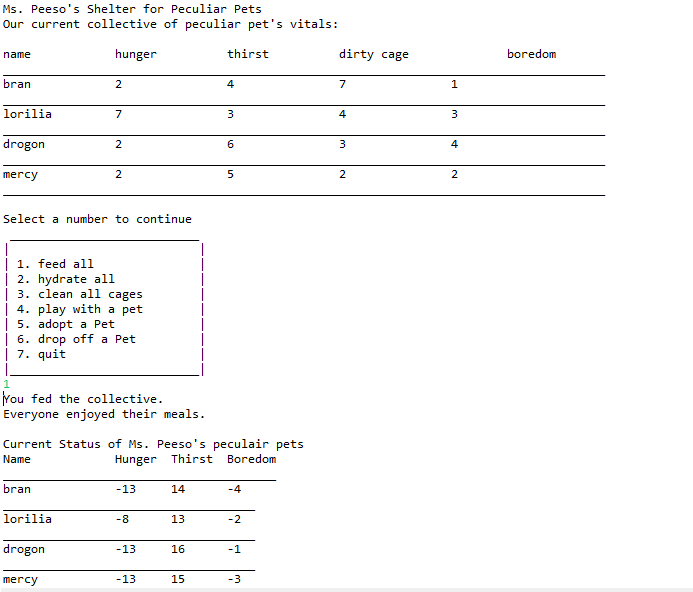
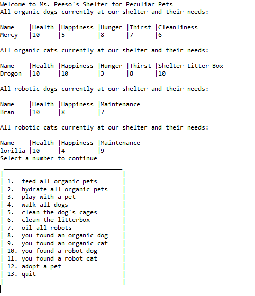

Virtual Pet allows you to care for your very own virtual dragon. This game is crafted using object oriented programin with Java.

contact information
jamie.peeso@gmail.com


skills:

Virtual Pet allows you to care for your very own virtual dragon. This game is crafted using object oriented programin with Java.

Virtual Pet Shelter gives you the opertunity to work at Ms. Peeso's Shelter for Piculiar Pets. Where you can play with a whold slew of piculair creatures. You can even take one home or drop off a found animal. This application is built with Java.

Java based program that uses a map to house all the virtual pets while also implimenting instance of to allow or not allow certain methods to be applied to those objects.